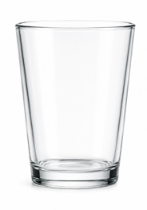
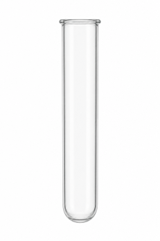
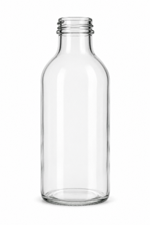
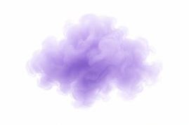
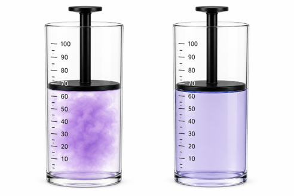
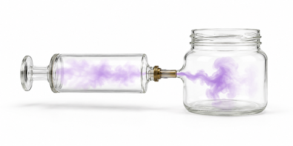
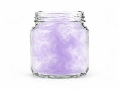
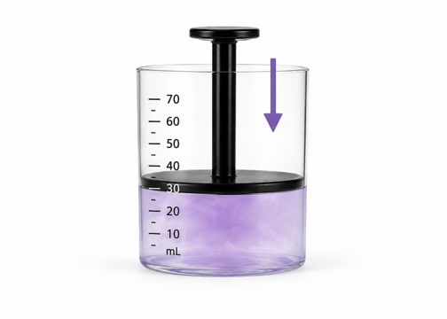

تبدو الأسطوانة التي يحملها الغواص صغيرة، لكنها تتيح له التنفس لوقت طويل تحت الماء.
كيف يُعقل هذا أصلًا؟
حاولوا أن تقترحوا تفسيرًا: ما الذي يسمح بتخزين كمية كبيرة من الغاز في أسطوانة صغيرة؟
ستكتشفون الإجابة لاحقًا
في هذه الوحدة سنتعلّم عن خصائص الغازات من خلال تجربتين، وسنكتشف أيضًا تفسير ظاهرة أسطوانة الغوص.
انقروا على البطاقات لاكتشاف ما سنختبره في كل تجربة.
نبدأ بالتجارب ونفحص كيف يتصرّف الغاز.
من خلال الملاحظات سنكتشف خصائصه، ولاحقًا سنستخدم ما تعلّمناه لنفهم كيف تعمل منتجات مختلفة.
التجربة 1 – الغاز في أوعية مختلفة:
اسحبوا الغاز البنفسجي إلى كل وعاء من الأوعية، ولاحظوا ما الذي يحدث له داخل الوعاء.
ما الذي يمكن أن نتعلمه من ذلك؟
التطبيق: سحابة غاز بنفسجية، وأسفلها كأس وأنبوب اختبار وزجاجة، وجميعها مفتوحة. اسحبوا الغاز إلى أحد الأوعية، أو اختاروا وعاءً فارغًا بلوحة المفاتيح. لإفراغ الأوعية انقروا على إعادة الضبط.




اسحبونيالتجربة 2 – انضغاط الغاز:
أمامكم وعاءان متطابقان. في أحدهما غاز وفي الآخر سائل.
ادفعوا المكبسين إلى الأسفل لضغط الغاز والسائل، واكتشفوا ما يحدث لحجم كلٍّ منهما.
ما الذي يمكن أن نتعلمه من ذلك؟

نلخّص خصائص الغاز التي تعلّمناها:
في التجربتين رأينا أن للغاز بعض الخصائص المميزة. اسحبوا كل خاصية إلى الصورة التي توضّحها:



انقروا على البطاقات لتقرأوا كيف تفسّر خصائص الغاز ظواهر من الحياة اليومية:
حتى الآن قمنا باستقصاء الغاز وفحصنا كيف يتصرّف، ومن خلال هذه الملاحظات اكتشفنا خصائص الغاز.
بعد ذلك استخدمنا ما اكتشفناه لكي نفسّر كيف تعمل منتجات مختلفة.
العلم يساعد على اكتشاف وفهم الخصائص، والتكنولوجيا تستخدم المعرفة لكي تطوّر حلولًا ومنتجات.
عالِم أو مطوِّرة تكنولوجيا – من يفعل ماذا؟
اسحبوا كل مهمة إلى صاحب المهنة المناسب أو صاحبتها:
مطوِّرة تكنولوجيا
تستخدم المعرفة لتطوير منتجات
عالِم
يبحث ويطرح الأسئلة ليفهم كيف يعمل العالم
تعلّمنا سابقًا عن خصائص المادة السائلة والمادة الصلبة، والآن عن الغاز أيضًا.
أكملوا الخانات الفارغة في الجدول للحصول على جدول ملخّص لخصائص حالات المادة:
| يتدفّق | يحافظ على شكله | يحافظ على حجمه | ينضغط | |
|---|---|---|---|---|
| مادة صلبة | لا | نعم | نعم | مادة صلبة، ينضغط |
| سائل | سائل، يتدفّق | لا | نعم | بالكاد |
| غاز | نعم | لا — يملأ كامل حجم الوعاء ويأخذ شكله | غاز، يحافظ على حجمه | نعم – قابل للانضغاط |
سؤالان خفيفان للإحماء قبل أن نتقدّم.
أيّ خاصية تميّز الغاز عن المادة الصلبة والمادة السائلة؟
أكملوا الكلمة الناقصة من بنك الكلمات:
الغاز كلَّ حجم الوعاء الذي يوجد فيه.
بنك الكلمات: